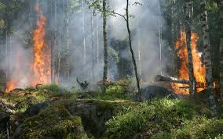
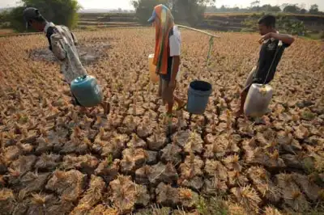
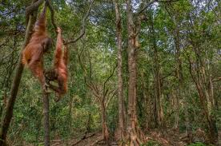

Bagi Makhluk hidup termasuk manusia, kita terkena dampak kehilangan lingkungan akibat kerusakan yang disebabkan. Seperti perubahan iklim yang ekstrem akibat kegiatan manusia dan polusi mengancam kestabilan lingkungan sehingga meningkatkan risiko bencana alam dan kerusakan lingkungan. Pencemaran dan kerusakan ini berdampak pada kesehatan kehidupan sekitarnya. Untuk fauna dan flora, mereka kehilangan habitat aslinya dan mengancam punah akibat lingkungan yang sudah tidak biasa. Banyak hewan dan tumbuhan tidak dapat melanjutkan kehidupannya akibat habitat rusak, terputusnya rantai makan, dan segala ketidakseimbangan ekosistem. Bagi manusia tidak hanya lingkungan sekitar yang tidak nyaman dan mengancam kesehatan, tetapi SDA yang hilang akibat eksploitasi. Akibat eksploitasi, SDA turun menyebabkan kelangkaannya dan berdampak negatif bagi berbagai bidang terutama keberlanjutan ekonomi


Upaya dalam menjaga lingkungan sangatlah penting bagi kita semua. Penting untuk menjaga kenyamanan kami, melestarikan flora dan fauna, dan menjaga SDA keberlanjutan. Beberapa hal yang dapat dilakukan untuk menjaga bumi adalah mengurangi hal-hal seperti eksploitasi alam, pembuangan limbah sembarangan, dan lainnya. Perlindungan satwa liar dan larangan dalam memburu makhluk hidup tertentu sudah merupakan upaya dalam melindungi flora fauna. Juga penerapan sistem tebang pilih dan reboisasi membantu menjaga adanya ekosistem hutan. Bumi dan lingkungannya menjadi tanggung jawab bagi kita semua untuk menjaga dan melestarikannya.
